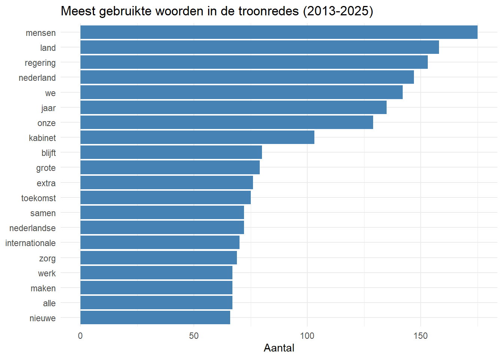
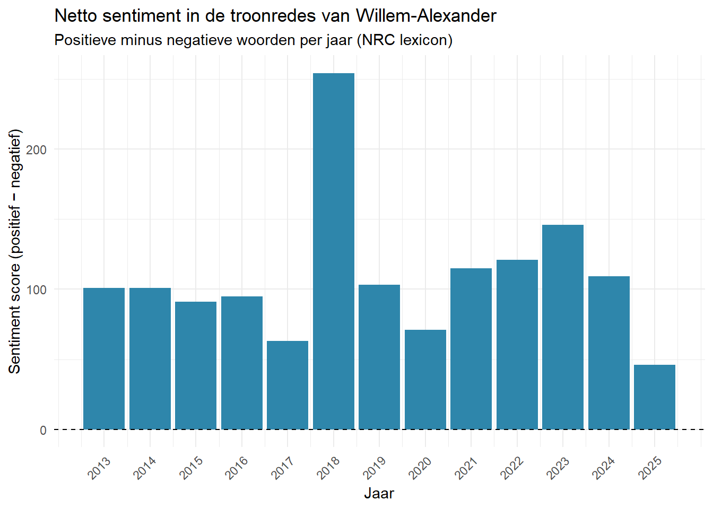
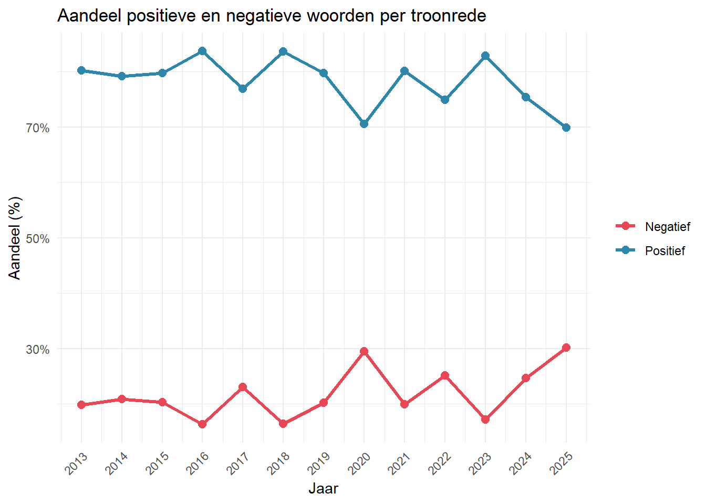
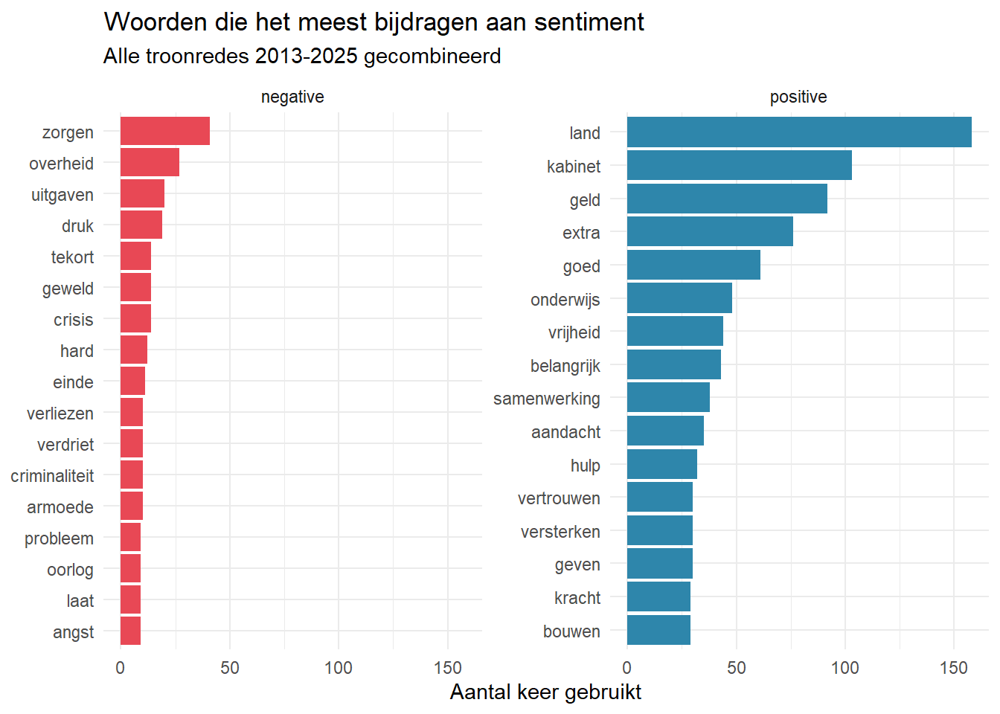
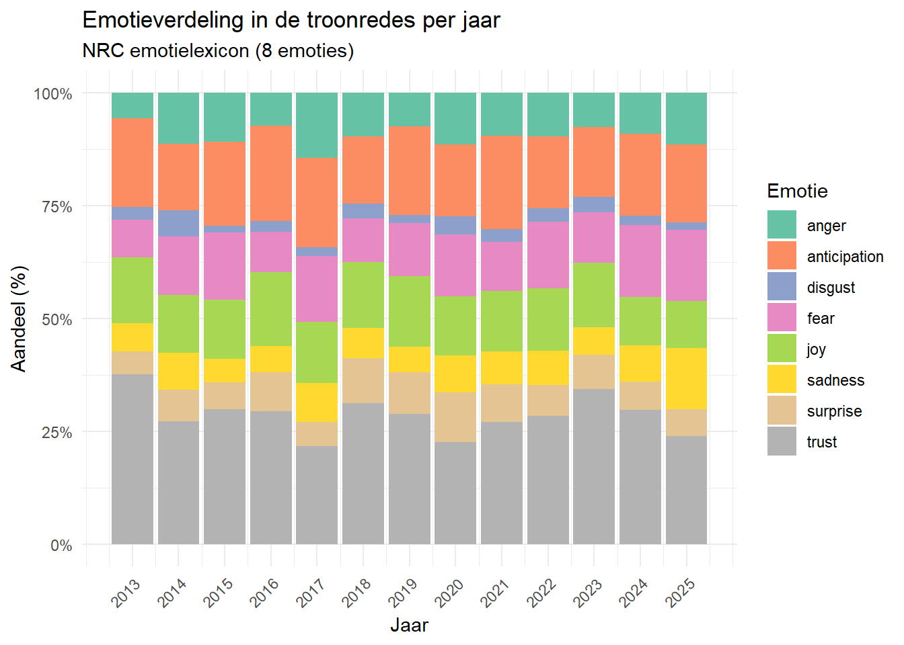
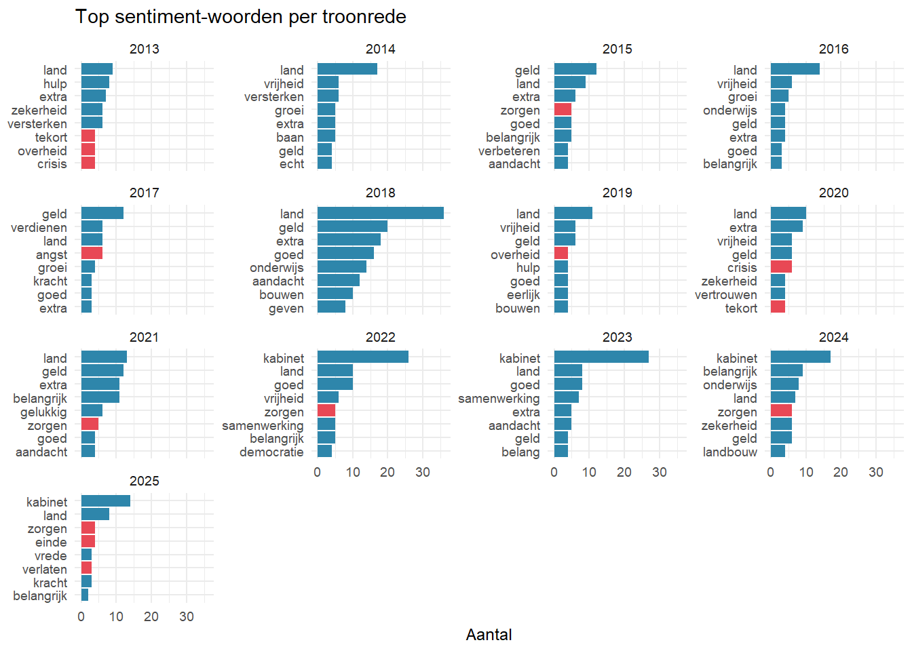

Opdracht 2 Vrije Opdracht
Wat heb ik gekozen?
Ik heb voor de vrije opdracht gekozen om textmining te leren, textmining is het analyseren van stukken text om daar inzicht uit te halen zoals patronen en structuren. Bijvoorbeeld het verschil van nieuws tussen 2 verschillende nieuwswebsites, of hoe sentimenten in boeken per hoofdstuk veranderen.
De planning
Hoe ga ik de nieuwe skill leren?
Ik ga deze skill leren door eerst veel onderzoek te doen dit heb ik gedaan op deze website:
| Naam website | Link |
|---|---|
| Text Mining with R: A Tidy Approach | https://www.tidytextmining.com/ |
Als anderen geintereseerd zijn in het leren van Textmining met R is dit dan ook echt een aanrader. Theorie wordt duidelijk uitgelegd en er worden aan het einde van de reader ook 3 case study’s gedaan.
Verder heb ik veel gexperimenteerd met wat ik heb geleerd door kleine opdrachten te maken en tutorials te volgen. Dit is de belangrijkste stap, omdat ik hierbij niet alleen in theorie weet hoe het moet maar ook in praktijk de skill toe kan passen.
Hoe ga ik laten zien dat ik de skill beheers?
Ik ga laten zien dat ik textmining beheers, door een analyse te doen van alle troonredes die Koning Willem-Alexander op prinsjesdag heeft gegeven. Beginnnend in 2013 tot de meest recente in 2025.
Tijdsbesteding
| Onderdeel | Omschrijving | Tijd |
|---|---|---|
| Leren | Tijd besteedt aan het onderwerp leren kennen, zowel onderzoek voor het beginnen als onderzoek tijdens het maken van de opdracht. | 14 |
| Toepassen | Het toepassen van de geleerde skills, denk hierbij aan het volgen van tutorials/kleine opdrachten doen om de geleerde dingen eigen te maken. | 12 |
| Uitwerken | Het uitwerken van de portfolio opdracht, hieronder valt alles in de bookdown pagina zetten/formatten en de opdracht maken die beheersing van de skill laat zien. | 6 |
De opdracht
De eerste stap in het process van de analyse is alle troonredes die Koning Willem-Alexander heeft gegeven te downloaden en in een tabel te zetten met het jaar wanneer hij deze toespraak heeft gedaan.
# Alle URLs van de troonredes
troonrede_urls <- tibble(
jaar = 2013:2025,
url = c(
"https://www.koninklijkhuis.nl/documenten/toespraken/2013/09/17/troonrede-2013",
"https://www.koninklijkhuis.nl/documenten/toespraken/2014/09/16/troonrede-2014",
"https://www.koninklijkhuis.nl/documenten/toespraken/2015/09/15/troonrede-2015",
"https://www.koninklijkhuis.nl/documenten/toespraken/2016/09/20/troonrede-2016",
"https://www.koninklijkhuis.nl/documenten/toespraken/2017/09/19/troonrede-2017",
"https://www.koninklijkhuis.nl/documenten/toespraken/2018/09/18/troonrede-2018",
"https://www.koninklijkhuis.nl/documenten/toespraken/2019/09/17/troonrede-2019",
"https://www.koninklijkhuis.nl/documenten/toespraken/2020/09/15/troonrede-2020",
"https://www.koninklijkhuis.nl/documenten/toespraken/2021/09/21/troonrede-2021",
"https://www.koninklijkhuis.nl/documenten/toespraken/2022/09/20/troonrede-2022",
"https://www.koninklijkhuis.nl/documenten/toespraken/2023/09/19/troonrede-2023",
"https://www.koninklijkhuis.nl/documenten/toespraken/2024/09/17/troonrede-2024",
"https://www.koninklijkhuis.nl/documenten/toespraken/2025/09/16/troonrede-2025"
)
)
text_troonrede <- function(url) {
Sys.sleep(1)
page <- read_html(url)
tekst <- page %>%
html_elements("main p") %>%
html_text2() %>%
paste(collapse = "\n\n")
tibble(tekst = tekst)
}
troonredes <- troonrede_urls %>%
mutate(data = map(url, text_troonrede)) %>%
unnest(data) %>%
select(jaar, tekst)Vervolgens moeten we een Lexicon hebben om een sentiment te hecten aan wat er in de toespraken staat. Voor engelse texten kan hier AFINN, bing of nrc voor worden gebruikt. Voor deze opdracht wordt er een nederlandse versie van nrc gebruikt, die vaker bij wetenschappelijk onderzoek is gebruikt.
| Package | Github | More info |
|---|---|---|
| syuzhet | https://github.com/mjockers/syuzhet | https://www.saifmohammad.com/WebPages/lexicons.html |
nrc_nl <- syuzhet::get_sentiment_dictionary(
dictionary = "nrc",
language = "dutch"
) %>%
as_tibble() %>%
select(word, sentiment)
nrc_nl_posneg <- nrc_nl %>%
filter(sentiment %in% c("positive", "negative")) %>%
group_by(word) %>%
filter(sentiment == "positive" | !any(sentiment == "positive")) %>%
ungroup()Voordat we het lexicon gaan gebruiken wordt de tekst uit de troonredes gefilterd. Stopwoorden worden uit de tekst gehaald en er wordt vervolgens gekeken naar de meest voorkomende woorden die overblijven.
nl_stopwords <- tibble(word = stopwords("nl"))
tidy_troonredes <- troonredes %>%
unnest_tokens(word, tekst) %>%
anti_join(nl_stopwords, by = "word") %>%
filter(!str_detect(word, "^[0-9]+$"))
tidy_troonredes %>%
count(word, sort = TRUE) %>%
slice_max(n, n = 20) %>%
mutate(word = reorder(word, n)) %>%
ggplot(aes(n, word)) +
geom_col(fill = "steelblue") +
labs(
title = "Meest gebruikte woorden in de troonredes (2013-2025)",
x = "Aantal", y = NULL
) +
theme_minimal()
Figuur 2.1: De meest gebruikte woorden in de troonredes (2013–2025). De grafiek toont de twintig woorden die het vaakst voorkomen in alle troonredes van Willem-Alexander samen. Woorden als ‘Nederland’, ‘mensen’ en ‘regering’ domineren, wat de focus van de toespraken weerspiegelt. Nederlandse stopwoorden en losse cijfers zijn vooraf verwijderd.
Als we nu willen kijken naar het sentiment van de troonredes, in andere woorden de positiviteit gebruiken we de nrc_nl lexicon. Elk woord wordt een sentiment aangehangen dat een postieve of negatieve waarde heeft, dit wordt opgesomd naar een netto sentiment waarde.
sentiment_per_jaar <- tidy_troonredes %>%
inner_join(nrc_nl_posneg, by = "word") %>%
count(jaar, sentiment) %>%
pivot_wider(
names_from = sentiment,
values_from = n,
values_fill = 0
) %>%
mutate(netto_sentiment = positive - negative)
sentiment_per_jaar %>%
ggplot(aes(x = jaar, y = netto_sentiment, fill = netto_sentiment > 0)) +
geom_col(show.legend = FALSE) +
geom_hline(yintercept = 0, linetype = "dashed") +
scale_fill_manual(values = c("TRUE" = "#2E86AB", "FALSE" = "#E84855")) +
scale_x_continuous(breaks = 2013:2025) +
labs(
title = "Netto sentiment in de troonredes van Willem-Alexander",
subtitle = "Positieve minus negatieve woorden per jaar (NRC lexicon)",
x = "Jaar",
y = "Sentiment score (positief − negatief)"
) +
theme_minimal() +
theme(axis.text.x = element_text(angle = 45, hjust = 1))
Figuur 2.2: Netto sentiment in de troonredes van Willem-Alexander (2013–2025). Elke staaf geeft het verschil tussen het aantal positieve en negatieve woorden per troonrede weer, op basis van het NRC-emotielexicon. Blauwe staven duiden op een overwegend positief betoog, rode staven op een negatief overwicht. Een duidelijke dip is zichtbaar in jaren met grote maatschappelijke crises, zoals het coronajaar 2020.
Ook kan er worden vergeleken wat het aandeel positief en negatief sentiment was per toespraak.
sentiment_per_jaar %>%
mutate(
totaal = positive + negative,
pct_pos = positive / totaal,
pct_neg = negative / totaal
) %>%
pivot_longer(
cols = c(pct_pos, pct_neg),
names_to = "richting",
values_to = "aandeel"
) %>%
mutate(richting = if_else(richting == "pct_pos", "Positief", "Negatief")) %>%
ggplot(aes(x = jaar, y = aandeel, color = richting)) +
geom_line(linewidth = 1.2) +
geom_point(size = 2.5) +
scale_x_continuous(breaks = 2013:2025) +
scale_y_continuous(labels = scales::percent_format()) +
scale_color_manual(values = c("Positief" = "#2E86AB", "Negatief" = "#E84855")) +
labs(
title = "Aandeel positieve en negatieve woorden per troonrede",
x = "Jaar",
y = "Aandeel (%)",
color = NULL
) +
theme_minimal() +
theme(axis.text.x = element_text(angle = 45, hjust = 1))
Figuur 2.3: Aandeel positieve en negatieve woorden per troonrede (2013–2025). De lijngrafiek toont hoe het aandeel positief en negatief geladen woorden — als percentage van alle sentimentwoorden — door de jaren heen verschuift. Waar Figuur 2.2 de absolute score weergeeft, maakt dit figuur de verhouding zichtbaar: een dalend positief aandeel hoeft niet te betekenen dat de toon negatiever wordt, maar kan ook wijzen op een meer neutrale woordkeuze.
Nu het sentiment van de troonredes bekend is kan er worden gekeken naar waar het sentiment vandaan komt, er wordt hieronder gekeken naar de meest bijdragende woorden aan het sentiment van elke troonrede samengevoegd.
woordbijdrage <- tidy_troonredes %>%
inner_join(nrc_nl_posneg, by = "word") %>%
count(word, sentiment, sort = TRUE) %>%
ungroup()
woordbijdrage %>%
group_by(sentiment) %>%
slice_max(n, n = 15) %>%
ungroup() %>%
mutate(word = reorder(word, n)) %>%
ggplot(aes(n, word, fill = sentiment)) +
geom_col(show.legend = FALSE) +
facet_wrap(~sentiment, scales = "free_y") +
scale_fill_manual(values = c("positive" = "#2E86AB", "negative" = "#E84855")) +
labs(
title = "Woorden die het meest bijdragen aan sentiment",
subtitle = "Alle troonredes 2013-2025 gecombineerd",
x = "Aantal keer gebruikt",
y = NULL
) +
theme_minimal()
Figuur 2.4: Woorden die het meest bijdragen aan het sentiment over alle troonredes (2013–2025). De twee panelen tonen de vijftien woorden die het sterkst bijdragen aan respectievelijk het positieve en het negatieve sentiment, geteld over alle dertien troonredes. Positief scorende woorden zijn overwegend normatief van aard (‘vrijheid’, ‘samenwerking’), terwijl negatief scorende woorden vaak verwijzen naar maatschappelijke uitdagingen (‘crisis’, ‘zorgen’).
Ook kan ons lexicon emoties die anders zijn dan positief/negatief hechten aan woorden waardoor er een gedetaileerder beeld kan worden gevormd over de toespraken.
emoties_per_jaar <- tidy_troonredes %>%
inner_join(nrc_nl, by = "word") %>%
filter(!sentiment %in% c("positive", "negative")) %>%
count(jaar, sentiment) %>%
group_by(jaar) %>%
mutate(aandeel = n / sum(n)) %>%
ungroup()
emoties_per_jaar %>%
ggplot(aes(x = jaar, y = aandeel, fill = sentiment)) +
geom_col(position = "fill") +
scale_x_continuous(breaks = 2013:2025) +
scale_y_continuous(labels = scales::percent_format()) +
scale_fill_brewer(palette = "Set2") +
labs(
title = "Emotieverdeling in de troonredes per jaar",
subtitle = "NRC emotielexicon (8 emoties)",
x = "Jaar",
y = "Aandeel (%)",
fill = "Emotie"
) +
theme_minimal() +
theme(axis.text.x = element_text(angle = 45, hjust = 1))
Figuur 2.5: Emotieverdeling in de troonredes per jaar (2013–2025). Het gestapelde staafdiagram laat zien hoe de acht NRC-emoties (zoals angst, vertrouwen, vreugde en afkeer) elk jaar zijn verdeeld als aandeel van alle emotiewoorden. De relatieve compositie maakt onderlinge vergelijking mogelijk ongeacht de lengte van de toespraak. Opvallend is de verschuiving in de verhouding tussen ‘vertrouwen’ en ‘angst’ rondom de coronaperiode.
De meest toevoegende woorden kunnen ook per troonrede verschillen, daarom wordt er ook individueel naar elk jaar gekeken.
tidy_troonredes %>%
inner_join(nrc_nl_posneg, by = "word") %>%
count(jaar, word, sentiment, sort = TRUE) %>%
group_by(jaar) %>%
slice_max(n, n = 8, with_ties = FALSE) %>%
ungroup() %>%
mutate(word = reorder_within(word, n, jaar)) %>%
ggplot(aes(n, word, fill = sentiment)) +
geom_col(show.legend = FALSE) +
facet_wrap(~jaar, scales = "free_y", ncol = 4) +
scale_y_reordered() +
scale_fill_manual(values = c("positive" = "#2E86AB", "negative" = "#E84855")) +
labs(
title = "Top sentiment-woorden per troonrede",
x = "Aantal",
y = NULL
) +
theme_minimal(base_size = 9)
Figuur 2.6: Top sentiment-woorden per troonrede (2013–2025). Per jaar worden de meest gebruikte positieve en negatieve woorden getoond. Dit maakt het mogelijk om de inhoudelijke lading van het sentiment per toespraak te duiden: dezelfde nettoscore kan voortkomen uit heel verschillende woordkeuzes. Zo kunnen jaren met vergelijkbare scores toch sterk uiteenlopende thema’s weerspiegelen.
Mijn ervaring
Ik vondt textmining erg leuk om te leren ook al heeft het meer tijd gekost dan ik dacht dat het zou duren om alles door te gaan. Ik ben erg tevreden met de website die ik heb gebruikt en zou hem dan ook aan iedereen die textmining in R wil leren aanraden.
Textmining is erg grappig om te kunnen, maar ik denk dat ik maar met uitzondering de kans ga krijgen om het te gebruiken. Ik ben tevreden met mijn keuze om textmining te leren, en met de tijd die het heeft gekost ook al was het allebei niet helemaal zoals verwacht.